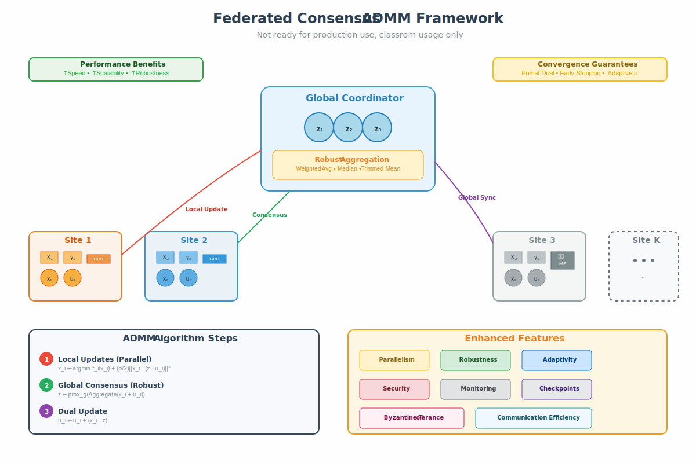

A pedagogical guide to understanding the
Alternating Direction Method of Multipliers from first principles to federated consensus.
Learn why it works, how to implement it, and when to use it.
Why add the penalty? The quadratic term makes the objective strongly
convex in the constraint violation, which improves numerical stability and convergence.
3
Scaled Form (The Key Simplification)
Define the scaled dual variable $u = \frac{1}{\rho}y$
and complete the square:
Why this works: Each subproblem is often easier to solve than the original coupled
problem. The penalty parameter $\rho$ provides the "spring" that pulls the variables toward
satisfying the constraint.
3
Convergence Monitoring
Track two residuals to monitor convergence:
Primal Residual
$$r^k = Ax^k + Bz^k - c$$
Measures constraint violation
Dual Residual
$$s^k = \rho A^T B (z^k - z^{k-1})$$
Measures dual feasibility
Stop when both $\|r^k\|_2 \leq \varepsilon_{\text{pri}}$ and $\|s^k\|_2
\leq \varepsilon_{\text{dual}}$.
Understanding Consensus Problems
1
What is a Consensus Problem?
A consensus problem occurs when we have multiple
"agents" (devices, processors, data centers) that need to agree on a common solution:
$$\min_{\{x_i\}, z} \sum_{i=1}^K f_i(x_i) + g(z) \quad \text{subject to} \quad x_i = z \text{ for
all } i$$
Real-world examples:
Federated learning: Each phone has local data, wants shared model
Distributed optimization: Split computation across data centers
Multi-task learning: Related tasks should have similar parameters
Sensor networks: Sensors collaborate to estimate a signal
2
Why Use a Consensus Variable z?
Without consensus variable:
$$\min_{\{x_i\}} \sum_{i=1}^K f_i(x_i) + g\left(\frac{1}{K}\sum_i x_i\right)$$
$$\text{subject to } x_i = x_j \text{ for all } i,j$$
Coupling makes this hard to decompose
With consensus variable:
$$\min_{\{x_i\}, z} \sum_{i=1}^K f_i(x_i) + g(z)$$
$$\text{subject to } x_i = z \text{ for all } i$$
Clean separation: each agent optimizes locally
Key insight: The consensus variable $z$ acts as a "mediator" that allows each agent
to optimize independently while maintaining global coordination.
// Consensus ADMM for min Σᵢ fᵢ(xᵢ) + g(z) s.t. xᵢ = zfunctionconsensus_admm(f, g, K, ρ, max_iter, tol):
// Initialize variables
z ← 0 // consensus variable
xᵢ ← 0 for i = 1,...,K // local variables
uᵢ ← 0 for i = 1,...,K // scaled dual variablesfor k = 0, 1, 2, ..., max_iter:
// 1. LOCAL UPDATES (parallel across agents)for i = 1 to K in parallel:
target = z - uᵢ // current target for agent i
xᵢ ← argmin_x [fᵢ(x) + (ρ/2)||x - target||²]
// 2. GLOBAL UPDATE (at server/coordinator)
x_avg ← (1/K) Σᵢ xᵢ // average local solutions
u_avg ← (1/K) Σᵢ uᵢ // average dual variables
v ← x_avg + u_avg // input to proximal operator
z ← prox_{g/(Kρ)}(v) // apply global regularization// 3. DUAL UPDATESfor i = 1 to K:
uᵢ ← uᵢ + (xᵢ - z) // track disagreement// 4. CONVERGENCE CHECK
r ← [x₁ - z; x₂ - z; ...; xₖ - z] // primal residual
s ← ρ(z - z_prev) // dual residualif ||r||₂ ≤ ε_pri and ||s||₂ ≤ ε_dual:
break// converged!// 5. ADAPTIVE ρ (optional)if ||r||₂ > μ||s||₂: // primal large, dual small
ρ ← τ * ρ // increase penalty
uᵢ ← uᵢ / τ for all i // rescale dualselif ||s||₂ > μ||r||₂: // dual large, primal small
ρ ← ρ / τ // decrease penalty
uᵢ ← uᵢ * τ for all i // rescale duals
z_prev ← z // save for next iterationreturn z, {xᵢ} // consensus solution// Typical parameters: μ = 10, τ = 2, ε_pri = ε_dual = 1e-3
Clasroom Framework

Using the Framework —
in 5 Minutes
This block shows how to subclass
FederatedConsensusADMM, run a federated optimization, read the logs, and customize
advanced options. It is designed to be a drop‑in section for the documentation site you’re
building.
STEP 1
Subclass
Implement the three required hooks: _init_blocks,
_local_update, _objective.
STEP 2
Fit
Call fit(X_list, y_list). The framework runs ADMM
with residual checks, adaptive ρ, and timing.
STEP 3
Inspect
Read history_, z_,
x_local_, and u_. Plot convergence and compare to centralized
baselines.
Use over_relaxation≈1.4; standard trick for ill‑conditioned problems.
Standardize features; scale objectives to similar magnitudes.
NaN/Inf appears:
Check data for NaNs; regularize local solves (+ εI).
Gradually grow rho instead of starting large.
Verify shapes match across blocks/sites.
FAQ
Is ADMM exact for k‑means / nonconvex models?
No. For nonconvex problems, ADMM is a heuristic with strong empirical
performance, but convergence to global minima isn’t guaranteed. For convex problems (ridge,
LASSO, constrained LS), you have standard convergence guarantees.
When should I use over‑relaxation?
When the primal residual decays slowly or oscillates. Try α∈[1.2,1.6]; α=1
recovers vanilla ADMM.
Do I need exact local solves?
Not necessarily. A few iterations of an inner method (e.g., CG/L‑BFGS) often
suffice; exactness isn’t required for convergence in practice.